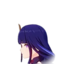
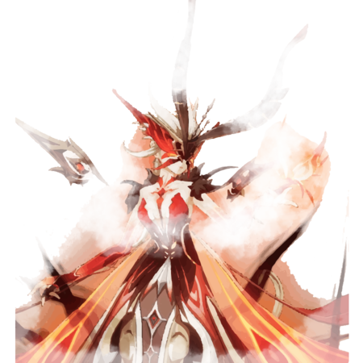

Back
Me of The Screen
What is this project about?
The project is about creating an infographic by gathering information from things I do everyday.
The project
In this project, I noiced myself playing Genshin Impact everyday for over a year. Therefore, I decied to record myself playing it and then putting the footages into one video and speed them up. Then I rewatched video many times to gather the needed datas.
WIP
During the planning stage, I noticed that the game has the lots of wood framed chalkboards in every major cities in the game. Thus, I am picking the menu board style in the city Mondstadt.
I immediately start by creating the chalkboard outline with fyers on it just like how it appeared in the game.

After that, I gathered informations from the clip I made that include all of
the gameplay footages. From there, I went and found images of the characters, bosses, and the other things that match the context.
I found most of the images on the game’s wikia. Despite so, the website format all of the images to webp file. Therefore, I had to convert the webp files
to PNG to use. Despite that, the images size were small, thereforeI had to use
trace feature in illustator to make the images size larger and visible when I
put them in the infographic. Lastly, I have to either remove the background
or modify them to make them fit into the infographic. Bellow are the direct
comparation between the raw and the edited version.
After this stage, I put all of the components together into the layout that I created at the beginning.





Reflection
In this project, I was able to reflect on how I play the game everyday on the course of a week. Looking back gave me quite a shock considering how little time I spent on playing the game. On top of that, At the beginning, I was struggling of thinking of which design to use, but I ran through the chalk boards when playing the game and immediately draw the connection. Once that was done, everything else was simple. Overall, I had a good time working on the project.